使用 Docker 运行 Jenkins, 结合 Gogs 完成 Java 和 Vue 项目的自动化部署
Docker 的安装可以参考Docker 部署微服务 (Cloud-Admin) 以及 Docker 参数、命令
安装以及配置 Jenkins
安装 Jenkins
新建目录
1
mkdir /var/jenkins_home
修改所属用户
1
chown 1000 /var/jenkins_home
没有此 ID 用户则添加
1
useradd -u 1000 jenkins
运行容器
1
2
3
4
5
6
7
8
9
10
11docker run -d -i --name jenkins --network docker-net -p 8080:8080 -p 50000:50000 -v /var/jenkins_home:/var/jenkins_home -v /etc/localtime:/etc/localtime:ro jenkins/jenkins:lts
# 配置 Nginx 反向代理可以添加参数
--env JENKINS_OPTS="--prefix=/jenkins"
# Nginx 配置
location /jenkins {
proxy_pass http://172.17.0.1:8080;
proxy_set_header Host $host;
proxy_set_header X-Real-IP $remote_addr;
proxy_set_header X-Forwarded-For $proxy_add_x_forwarded_for;
proxy_redirect off;
}查看日志 会实时显示日志，最后会显示其中类似 f3f67320f92e4ba6bdecb083a03af92c 的一行即为密码
1
docker logs -f jenkins
配置 Jenkins
访问 http://localhost:8080(Nginx 反向代理访问http://localhost/jenkins) 输入上一步的密码，选择第一种安装插件方式即可
如果提示
该 jenkins 实例似乎已离线:访问 http://localhost:8080/pluginManager/advanced 找到最底部的 Update Site 选项，修改 URL 的 https 为 http。
修改
/var/jenkins_home/updates/default.json文件的connectionCheckUrl属性的值，改为可访问地址, 重启 Jenkins
安装插件
系统管理 -> 插件管理 -> 可选插件
搜索安装Generic Webhook Trigger,NodeJS Plugin,Maven Integration,Publish Over SSH配置
系统管理 -> 系统设置 -> 新增 Publish over SSH 配置
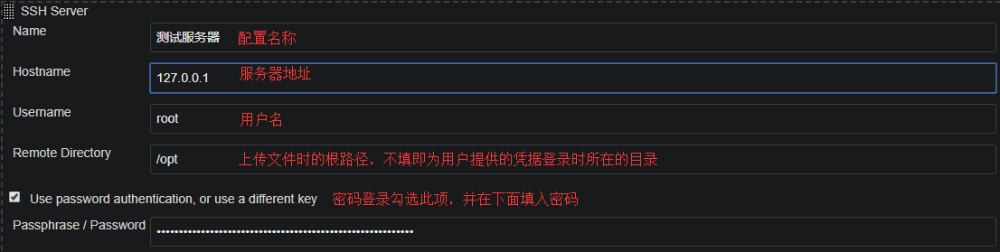
系统管理 -> 全局工具配置 -> Maven 安装以及 NodeJS 安装, 勾选自动安装即可
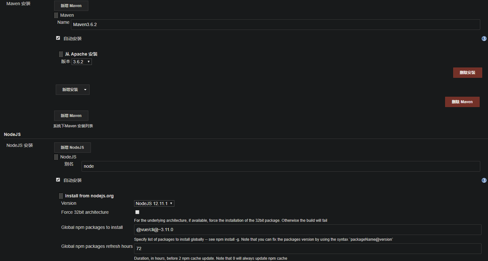
自动部署 Gogs 上的 Java 项目
目前项目为微服务，使用 docker 部署，并且只自动部署测试分支，所以以下例子只有推送 release 分支且指定模块下有修改才触发自动部署。
新建任务
新建任务 -> 输入名称 -> 构建一个 maven 项目 -> 确定 -> 输入描述。
输入源码管理信息
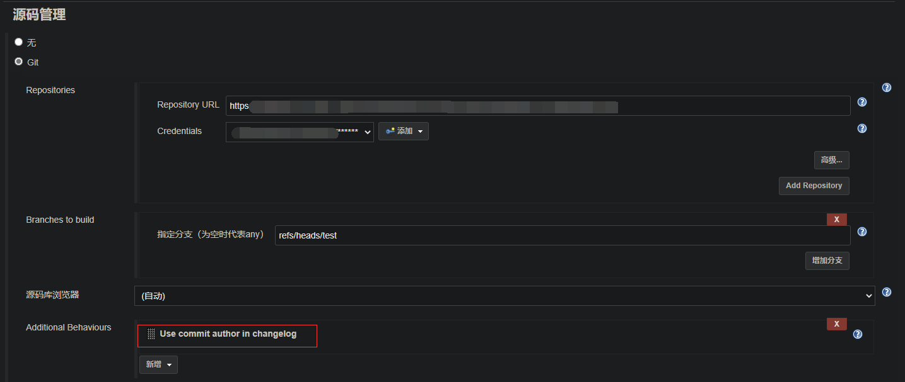
构建触发器
- 勾选
Generic Webhook Trigger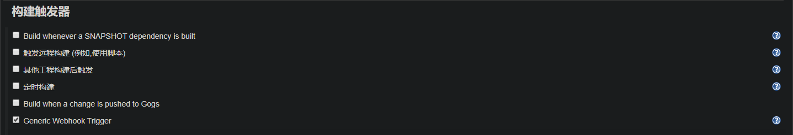
- 新增三个 Post content parameters
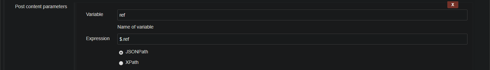
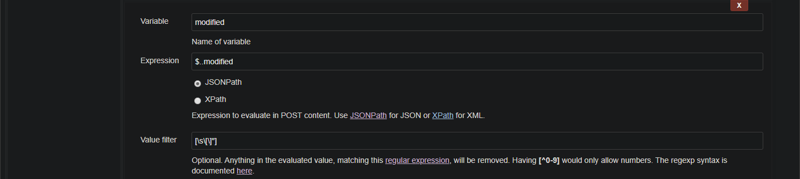
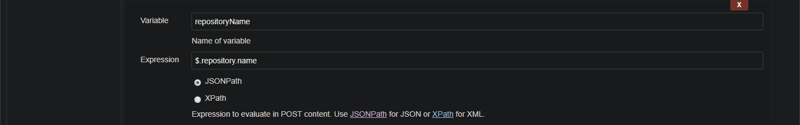
- 输入 Token
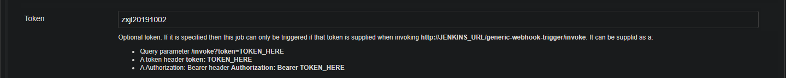
- 勾选
Optional filter
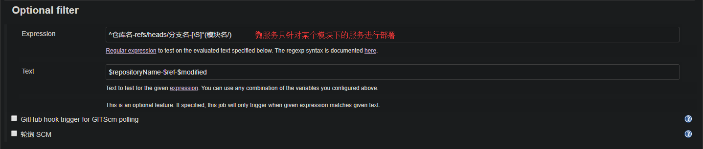
Pre Steps 以及 Build
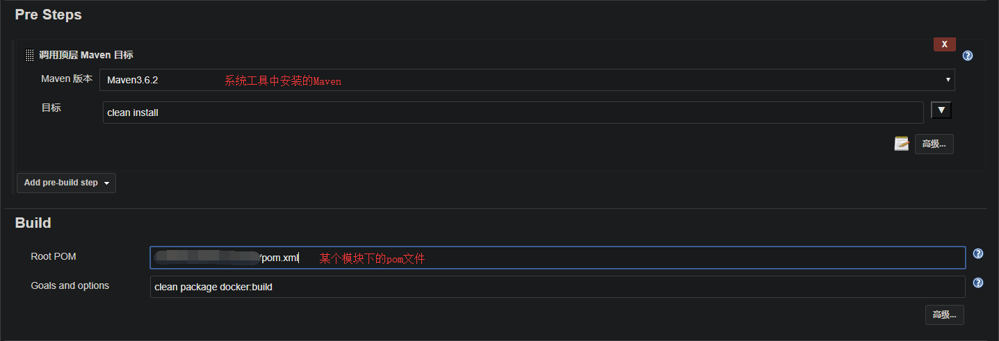
Post Steps
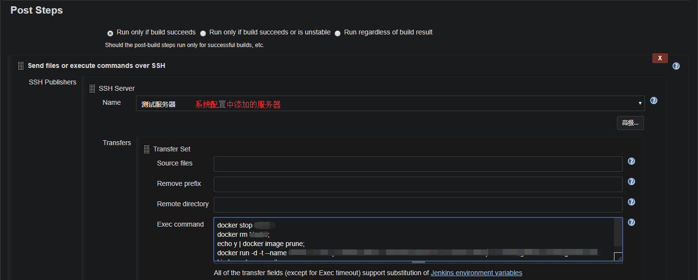
登录 Gogs 在仓库管理 -> 管理 Web 钩子 -> 添加 Web 钩子 -> gogs
推送地址为：http://localhost:8080/generic-webhook-trigger/invoke?token=` 构建触发器中输入的 Token`
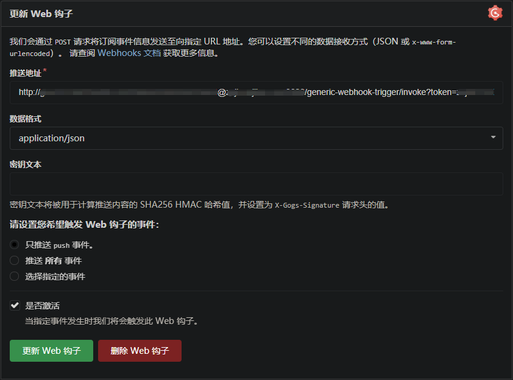
自动部署 Gogs 上的 Vue 项目
新建任务
新建任务 -> 输入名称 -> 构建一个自由风格的软件项目 -> 确定
构建触发器和 Optional filter 参照 Java 项目部署即可
构建环境
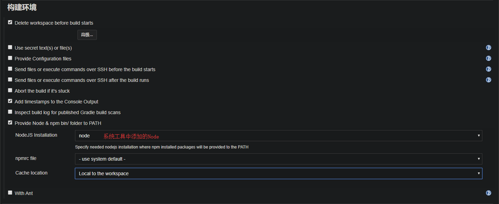
Cache location选项:- 每个节点，这是默认的 NPM 行为。所有下载包都放在 Lunix 系统上的~/.npm 或 Windows 系统上的 %APP_DATA%\npm-cache 中。
- 每个执行者，每个执行者在~/npm-cache/$executorNumber 中都有自己的 NPM 缓存文件夹。
- 每个作业，放在 $WORKSPACE/npm-cache 下的工作区文件夹中。此缓存将与工作区一起被刷除，并且在删除作业时将被删除。
构建
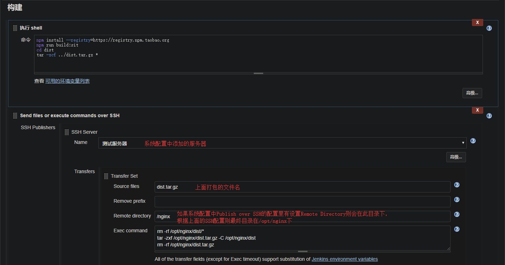
命令如下:1
2
3
4
5
6
7
8
9
10# node-sass 安装失败可以修改 package.json："node-sass": "^4.13.0", 并设置淘宝镜像
# SASS_BINARY_SITE=https://npm.taobao.org/mirrors/node-sass npm install --registry=https://registry.npm.taobao.org
npm install --registry=https://registry.npm.taobao.org
npm run build
cd dist
tar -zcf ../dist.tar.gz *
rm -rf /**/dist/*
tar -zxf /**/dist.tar.gz -C /**/dist
rm -rf /**/dist.tar.gz
企业微信通知
安装插件
Jenkins 企业微信通知插件系统配置
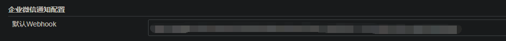
任务单独配置
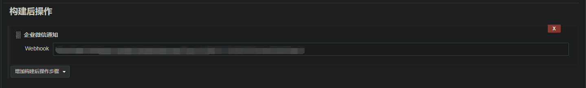
效果图
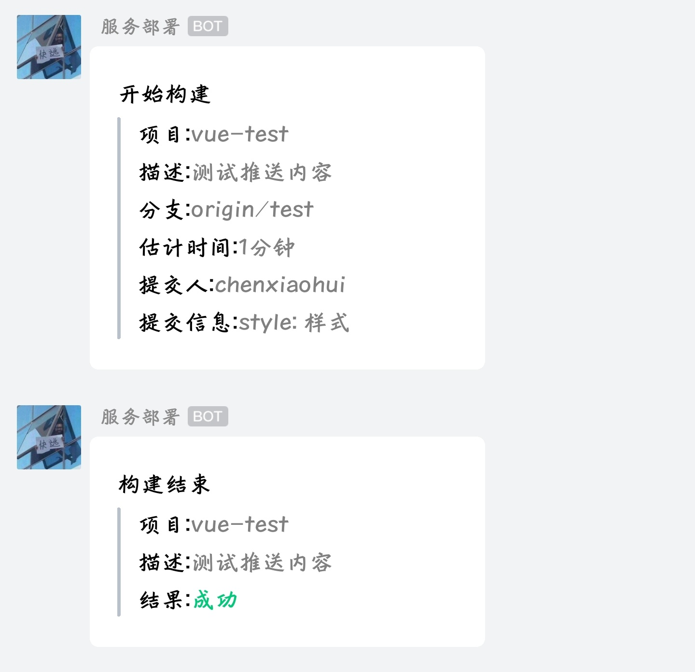